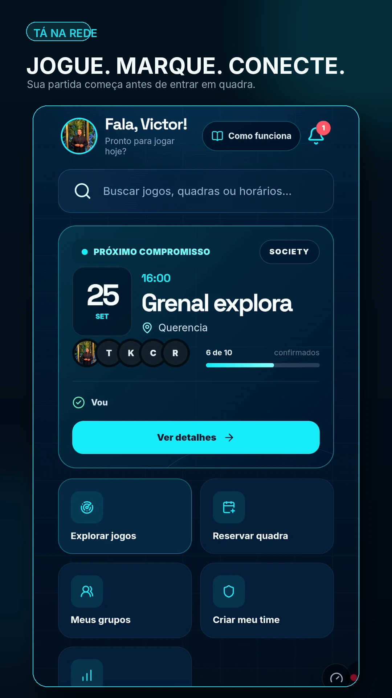
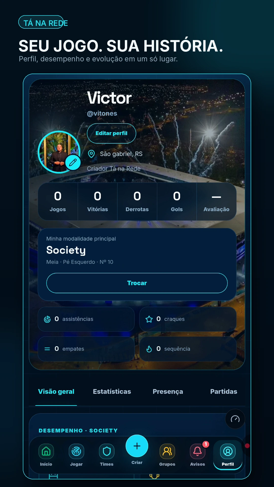

SAAS ESPORTIVO • PRODUTO PRÓPRIO
Conhecer o Tá na Rede ↗
Tá na Rede
Uma plataforma esportiva que conecta jogadores, partidas, times, grupos e arenas. A proposta é reunir descoberta de jogos, organização da rotina esportiva e identidade do jogador em uma experiência única.
Perfis esportivosModalidade, posição, desempenho e evolução do jogador.
Partidas e comunidadeExplorar jogos, participar, criar times, grupos e acompanhar avisos.
Arenas e reservasFluxos para encontrar horários, reservar quadras e aproximar jogadores dos espaços esportivos.
Experiência pós-jogoResultados, estatísticas, votação de craque e conteúdo compartilhável.

